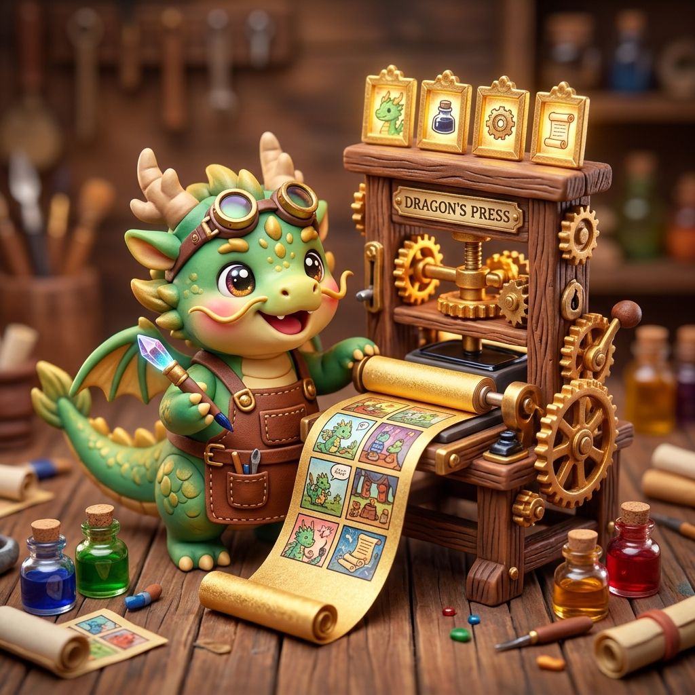

正在調配靈力墨水、升起寫作島嶼與守門神殿…
南一數・翰林國・康軒社｜四上期末專屬作文修辭島嶼
登入後，您在任何電腦或平板上寫的《考試前後》作文四段、五要素選擇與評分，都會自動即時同步，換電腦不用重寫！
💡 只要在 Chrome 瀏覽器登入自己的帳號，點擊上方即可一鍵連線同步！
※ 檔案目錄中的 google_sheets_gas_code.js 提供完整 Apps Script 程式碼，複製貼上發佈後即可全班連動！
依據自己的寫作信心選擇，各模式皆配備專屬鷹架，保證能順利通關！

唭咔！四段起承轉合已就位！讓我啟動四格漫畫印刷機，為你把文字轉化為精彩漫畫！